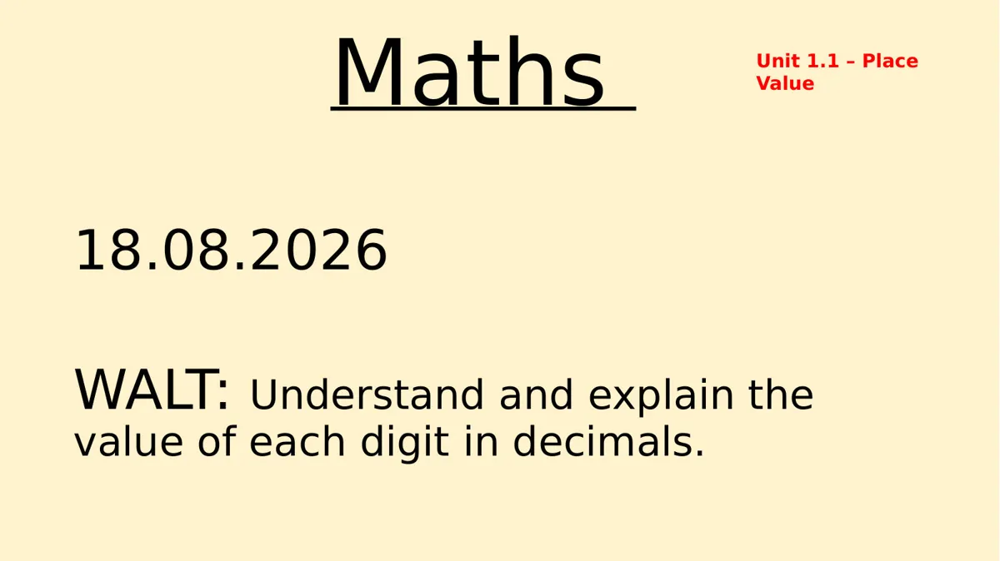
Maths
Unit 1.1 – Place
Value
18.08.2026
WALT: Understand and explain the
value of each digit in decimals.
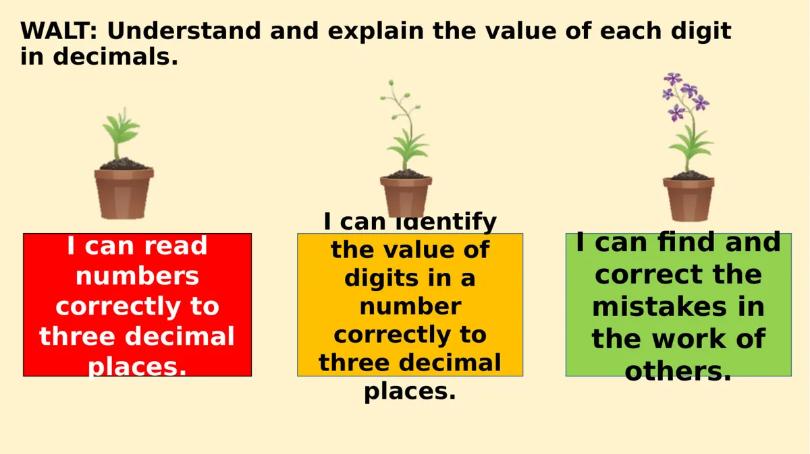
WALT: Understand and explain the value of each digit
in decimals.
I can identify
the value of
digits in a
number
correctly to
three decimal
places.
I can find and
correct the
mistakes in
the work of
others.
I can read
numbers
correctly to
three decimal
places.
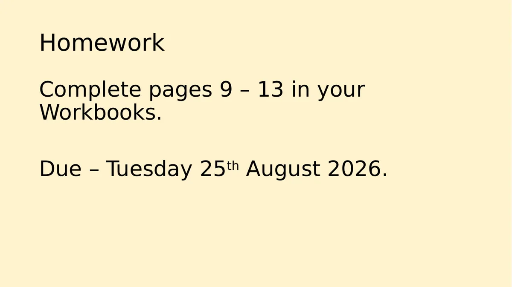
Homework
Complete pages 9 – 13 in your
Workbooks.
Due – Tuesday 25th August 2026.
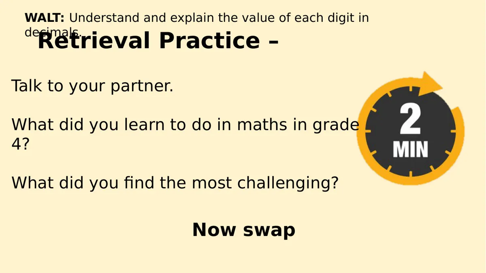
WALT: Understand and explain the value of each digit in
decimals.
Retrieval Practice –
Talk to your partner.
What did you learn to do in maths in grade
4?
What did you find the most challenging?
Now swap
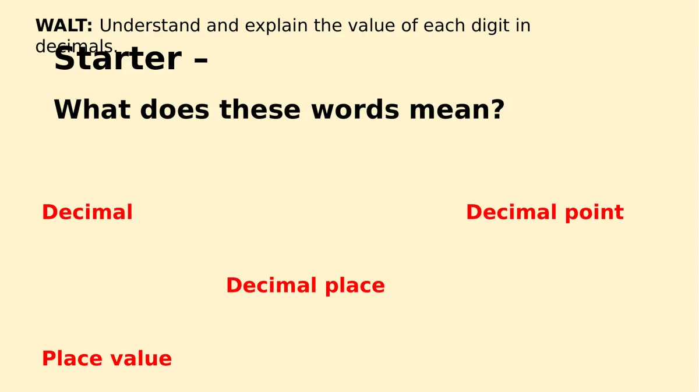
WALT: Understand and explain the value of each digit in
decimals.
Starter –
What does these words mean?
Decimal Decimal point
Decimal place
Place value
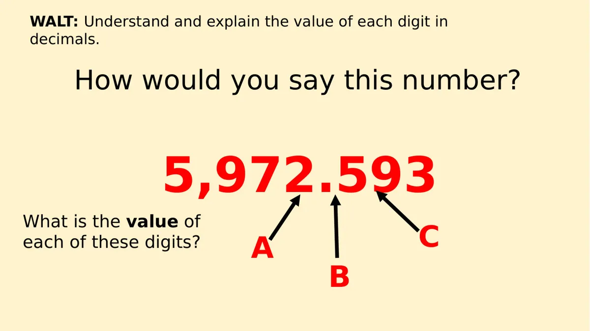
WALT: Understand and explain the value of each digit in
decimals.
How would you say this number?
5,972.593
What is the value of
C
each of these digits?
A
B
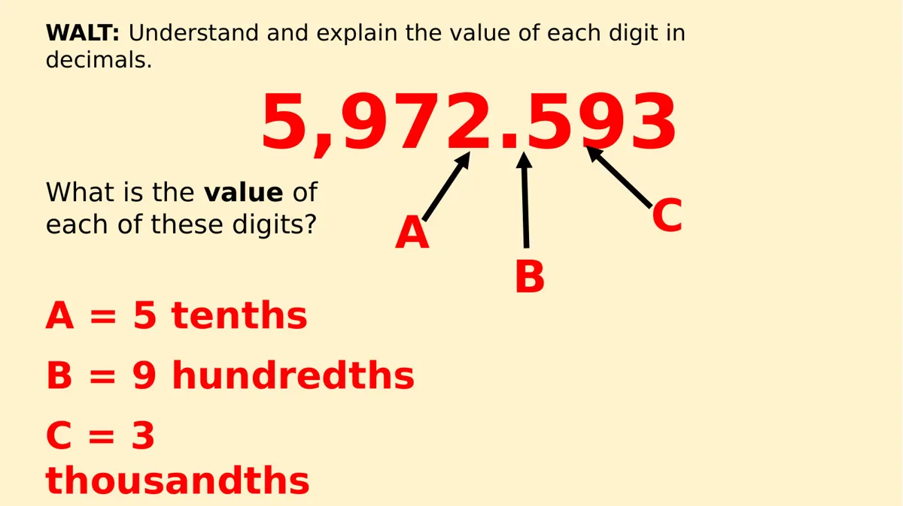
WALT: Understand and explain the value of each digit in
decimals.
5,972.593
What is the value of
C
each of these digits?
A
B
A = 5 tenths
B = 9 hundredths
C = 3
thousandths
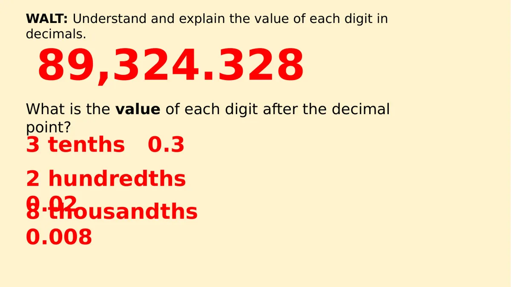
WALT: Understand and explain the value of each digit in
decimals.
89,324.328
What is the value of each digit after the decimal
point?
3 tenths 0.3
2 hundredths
0.02
8 thousandths
0.008
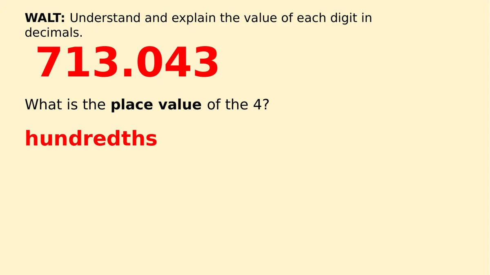
WALT: Understand and explain the value of each digit in
decimals.
713.043
What is the place value of the 4?
hundredths
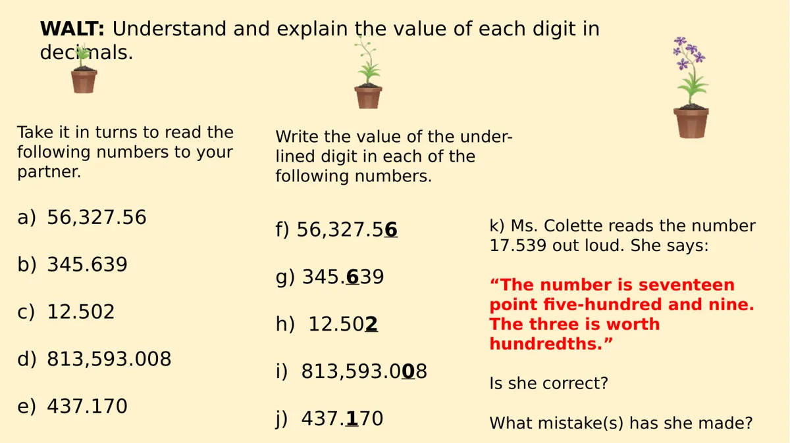
WALT: Understand and explain the value of each digit in
decimals.
Take it in turns to read the
following numbers to your
partner.
a)56,327.56
b)345.639
c)12.502
d)813,593.008
e)437.170
Write the value of the under-
lined digit in each of the
following numbers.
f) 56,327.56
g) 345.639
h) 12.502
i) 813,593.008
j) 437.170
k) Ms. Colette reads the number
17.539 out loud. She says:
“The number is seventeen
point five-hundred and nine.
The three is worth
hundredths.”
Is she correct?
What mistake(s) has she made?
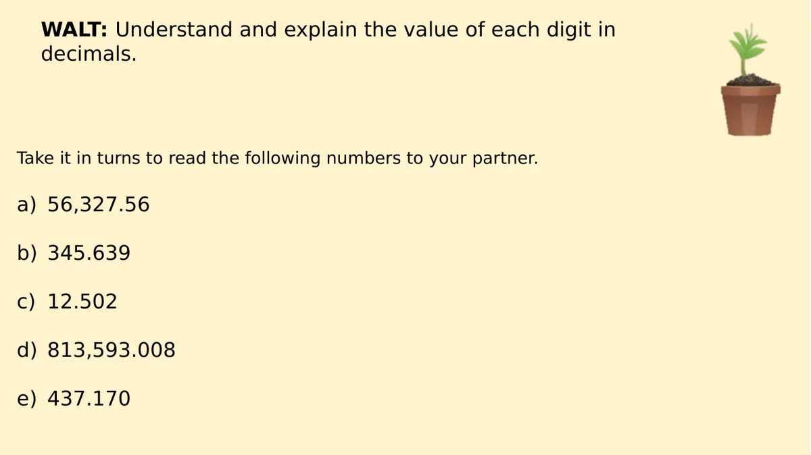
WALT: Understand and explain the value of each digit in
decimals.
Take it in turns to read the following numbers to your partner.
a)56,327.56
b)345.639
c)12.502
d)813,593.008
e)437.170
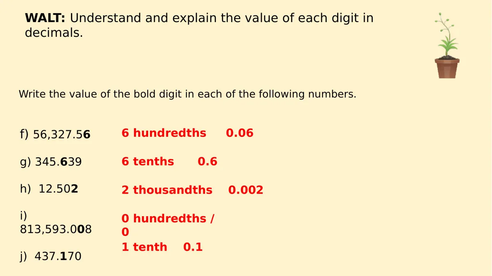
WALT: Understand and explain the value of each digit in
decimals.
Write the value of the bold digit in each of the following numbers.
6 hundredths 0.06
f) 56,327.56
6 tenths 0.6
g) 345.639
h) 12.502
2 thousandths 0.002
i)
813,593.008
0 hundredths /
0
1 tenth 0.1
j) 437.170
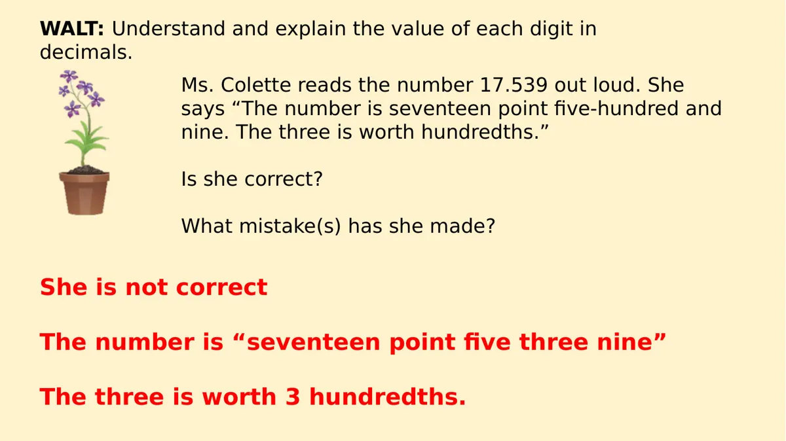
WALT: Understand and explain the value of each digit in
decimals.
Ms. Colette reads the number 17.539 out loud. She
says “The number is seventeen point five-hundred and
nine. The three is worth hundredths.”
Is she correct?
What mistake(s) has she made?
She is not correct
The number is “seventeen point five three nine”
The three is worth 3 hundredths.
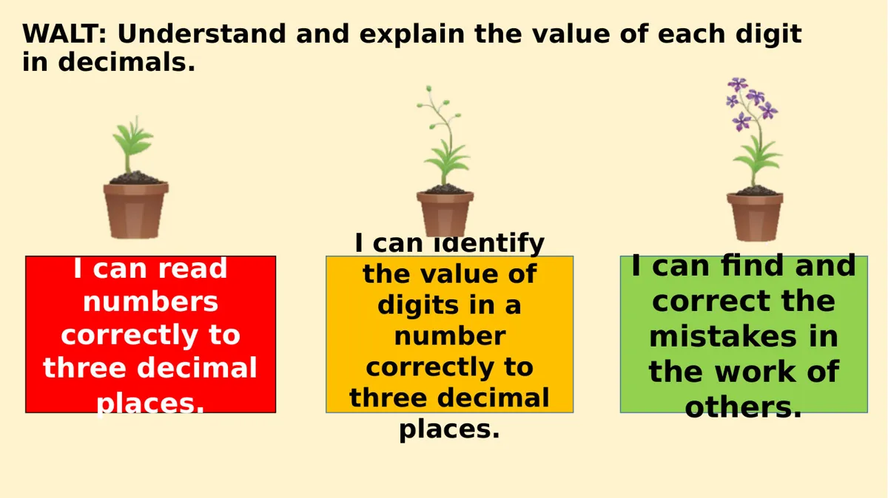
WALT: Understand and explain the value of each digit
in decimals.
I can identify
the value of
digits in a
number
correctly to
three decimal
places.
I can find and
correct the
mistakes in
the work of
others.
I can read
numbers
correctly to
three decimal
places.
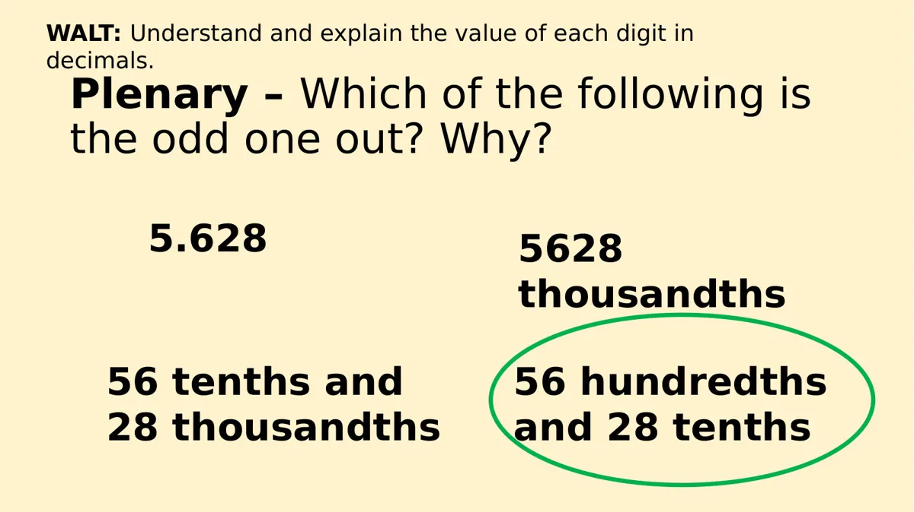
WALT: Understand and explain the value of each digit in
decimals.
Plenary – Which of the following is
the odd one out? Why?
5.628
5628
thousandths
56 tenths and
56 hundredths
28 thousandths
and 28 tenths